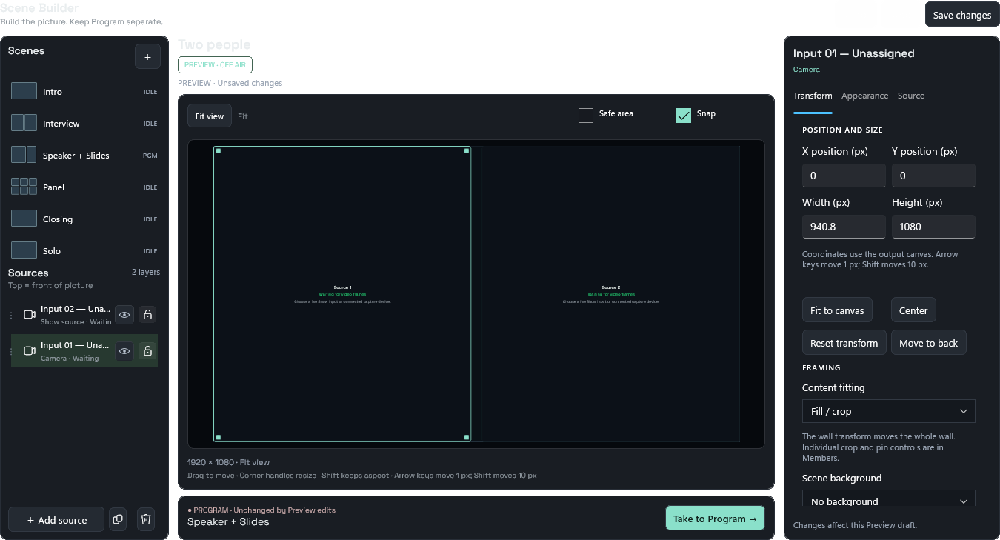
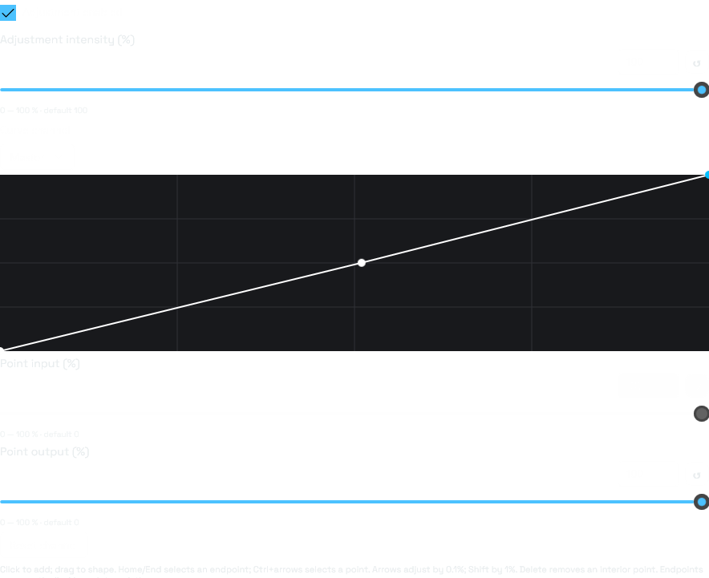
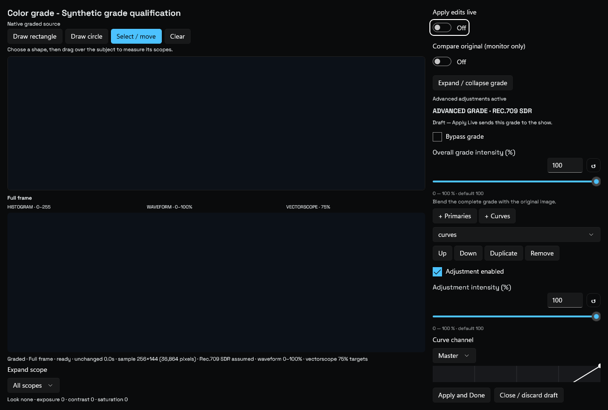

← All CoreVideo reviewsDevelopment candidate · October 15, 2026 · Installed app unchanged
Operator controls, together.
Actual compiled WinUI controls from the approved UI/UX pass. Start with the scene layouts, then inspect the lower-third groups and grading controls. Click an image for its full size.
Capture limits: These API captures show control layout with isolated test data. GPU video is excluded by the capture API; empty pictures are placeholders, not a live meeting. Some Fluent effects may differ from the desktop presentation. Physical/high-DPI review and the meeting bake remain open.
Development candidate 3ba8562 · October 15, 2026. Screenshots below are static, not interactive app controls.
Stable scene starters and Tiles
The + chooser creates Solo, Two people, or Screen + presenter. Empty named inputs remain selectable; creating a scene leaves Program alone.

Two people: Inputs 1 and 2, preserved as distinct assignments.
Review starter scenes ↓
Sources keep their identity
Offline rows retain their own last available picker label and explain reconnect/replacement. No picture or assignment is borrowed from another source.
 Mixed Zoom, camera and media assignments in the compiled Sources template. The wide source table remains horizontally scrollable; this pass does not claim a responsive card redesign.
Mixed Zoom, camera and media assignments in the compiled Sources template. The wide source table remains horizontally scrollable; this pass does not claim a responsive card redesign.
The interactive Sources redesign proposal is a separate, newer design. This capture shows the current development table.
Lower thirds: act first, refine by section
Preview, draft status, starter preset and Apply/Cancel stay above the detailed sections. Compact sliders retain Reset and exact entry.
Review lower thirds ↓
Grade curves and scope ROI
Home/End selects an endpoint; Ctrl+arrows selects points. Arrows edit by 0.1%, Shift by 1%. Endpoint input stays fixed. Existing rectangle/circle ROI measures scopes only; the grade still applies to the whole source.

Compiled curve editor.
Native-backed editor control layout; GPU picture/scope pixels are excluded from this image. Separate pixel tests verify those surfaces.Review grading / ROI ↓
Health and optional navigation
Health remains in Settings. Disabling the selected OHG workspace returns to Settings and persists without changing saved scenes.
Health/navigation behavior is ready for review in the candidate, but not pictured here. Review whether status belongs in Settings, how support export should be found, and which navigation entries should be optional. This page does not demonstrate live diagnostic measurements.
Review candidate only. No release or installation was performed, and these checks do not establish zero-miss meeting/output acceptance.
Review Settings / Health ↓
Leave feedback on this batch
No login needed. Notes are saved privately for CoreVideo for 180 days. Unsent drafts stay in this browser. Pick an area and mention the control or screenshot you mean.